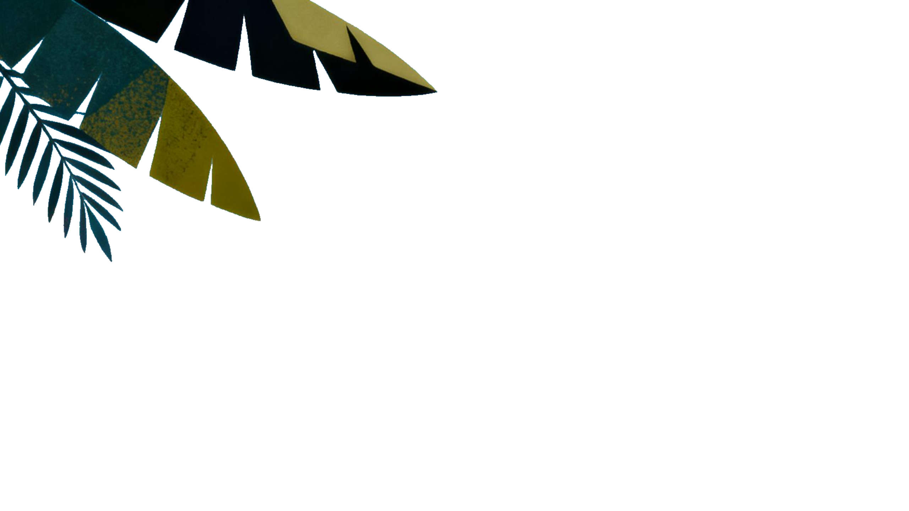
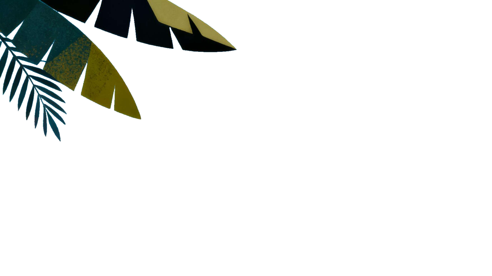
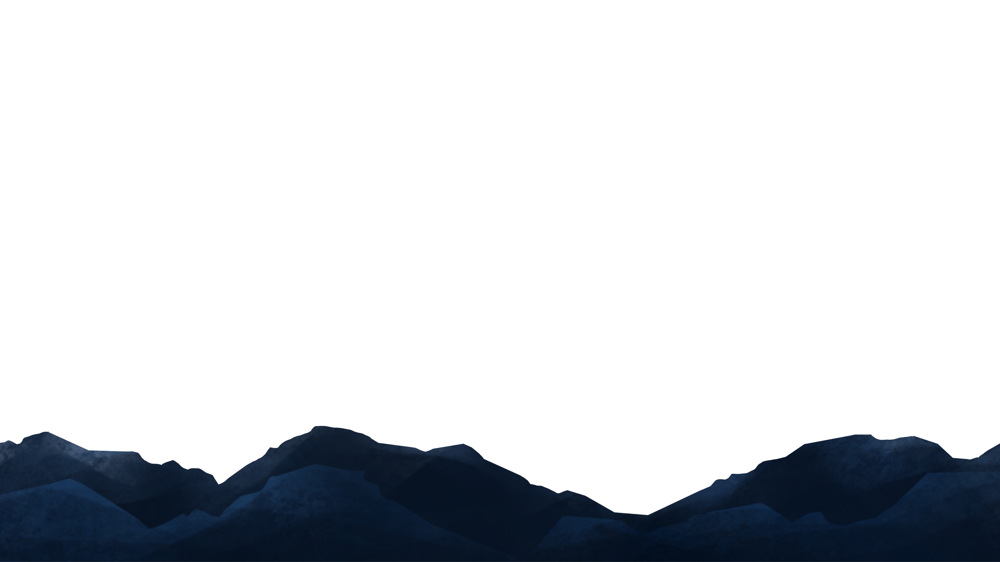
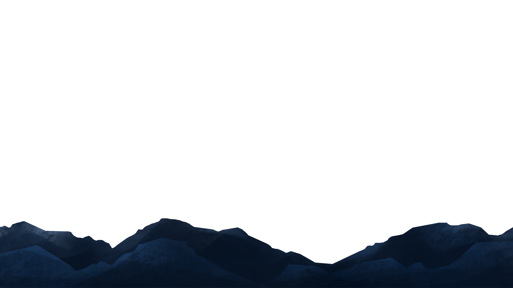
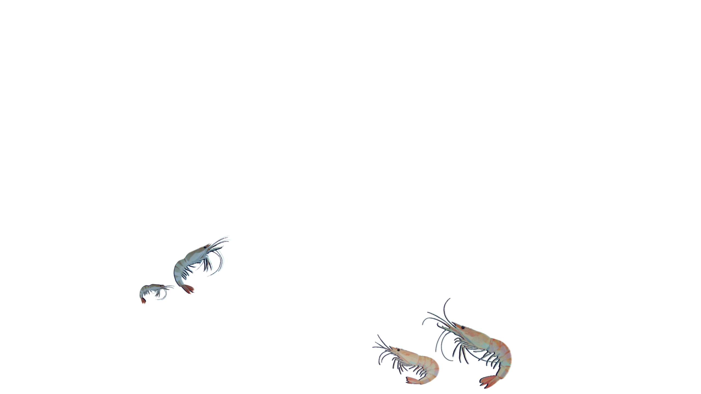
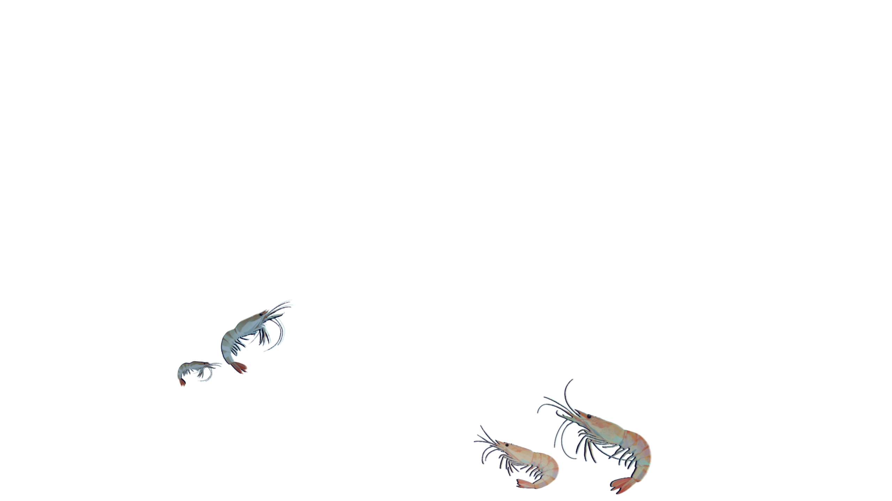

 

一场从海面到深渊的沉浸式下潜旅程。
在光影与浮游之间，探索那些隐匿在深海中的生命碎片。
这里是海洋的上层光照区，光线充足，是大部分海洋生物的栖息地。
你可以看到鳞光闪烁的凤尾鱼、成群游动的沙丁鱼，它们在这里觅食、繁殖，构成生机勃勃的生态系统。
光线稍微减弱，但仍是海洋中生命活跃的区域，水母、带鱼和鲭鱼群在此穿梭。
透过海水的蓝光，你可以欣赏到奇妙的海底景观与群游的鱼类生态。
这里是日光层下方，光线开始柔和，海水温度下降，是刺鳞鱼和对虾的活动区。
刺鳞鱼缓慢游动，闪烁鳞片在光线中微微反射；对虾在岩石间穿梭，寻找食物和庇护。
 

光线变得昏暗，这里是灯笼鱼、小型乌贼和管水母的世界。
它们靠发光器官或微弱光线活动，营造出神秘的海底景象，捕食或避开天敌。
这里海水更深更冷，长尾鲨和巨枪乌贼是顶级掠食者。
巨枪乌贼悄然潜行，长尾鲨灵活游动，形成层层捕食关系，保持生态平衡。
光线几乎完全消失，这里生活着盲虾、深海蛇鲭和深海海参。
它们依靠触觉、嗅觉和微弱生物发光寻找食物与伙伴，海底世界静谧而神秘。
 

在完全黑暗的深海中，吞噬鳗和深海𩽾𩾌鱼使用发光和敏锐感官捕食猎物。
它们缓慢巡游，保持能量消耗最小，同时在黑暗中创造独特的猎食技巧。


这是海洋最深的区域，几乎没有光线，雪人蟹、深海海胆、深海海星和巨型管虫在此栖息。
生物们缓慢移动或固着在岩石上，利用微弱化学能或沉积物获取养分，展现深海独特生态。


人类对海洋的探索，从温暖的日光层到昏暗的中层，直至这无垠的深海底层，仍只触及冰山一角。 这里黑暗、寒冷、压力巨大，却孕育着生命的奇迹——生物适应极端环境，悄然演化。
“海洋最深的角落，是人类眼睛所未及，但智慧与想象力可以抵达。”
从波光粼粼的海面到永恒的黑暗深渊，这场垂直旅程穿越了海洋的层层秘境。
海洋覆盖地球71%，人类探索却不足5%。
每一米下潜都是未知的挑战，每次发现都是生命极限的重新定义。深海中缓慢游动的生命，在高压低温无光中，诉说着最顽强的故事。
在海洋最深的黑暗中，我们找到了生命最耀眼的光芒。每一次下潜都是与远古的对话，每一次发现都是对未来的启示。